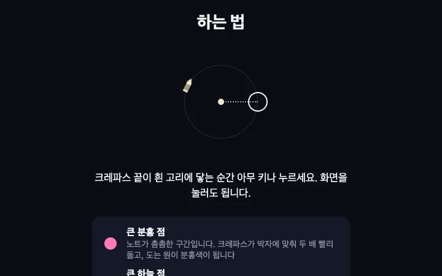
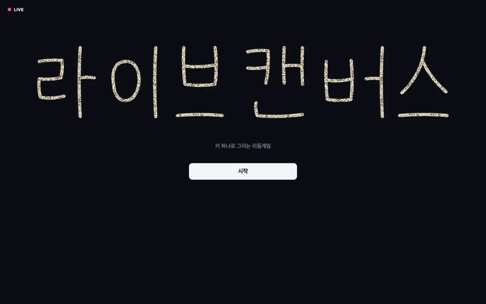
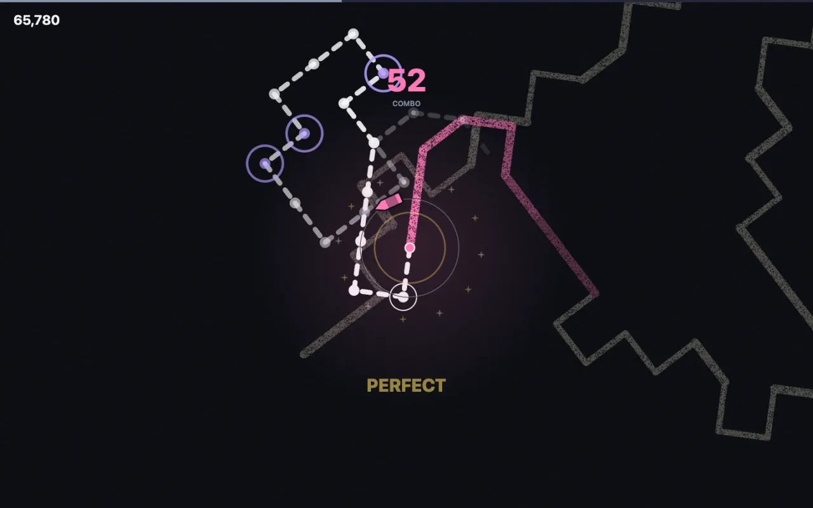
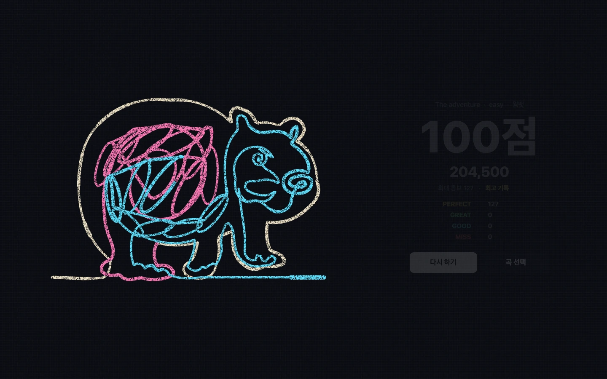
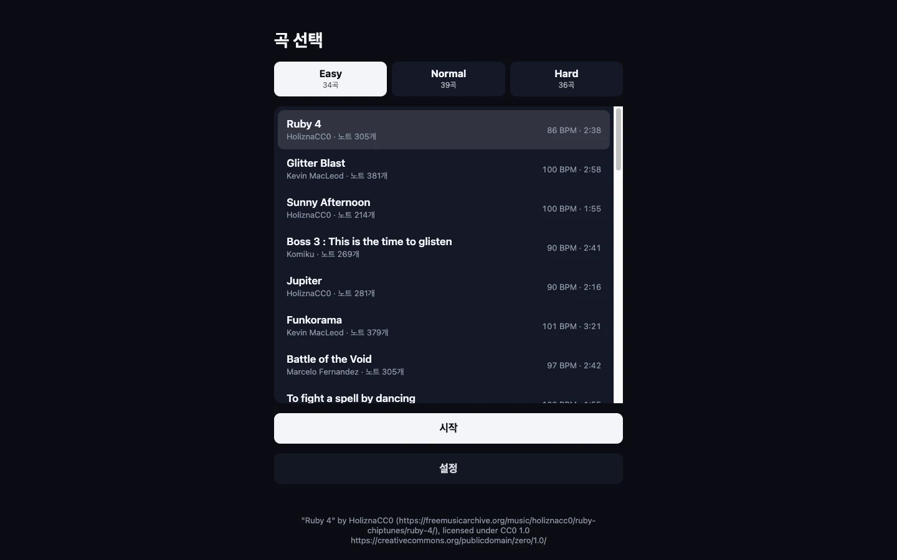
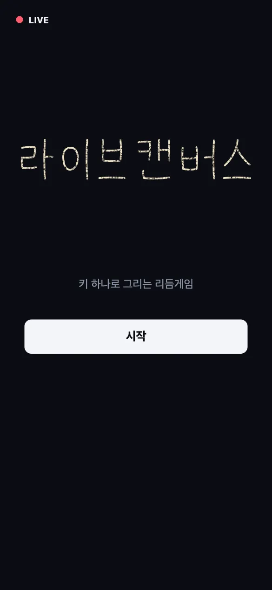

01키 하나로 조작

크레파스 끝이 흰 고리에 닿는 순간 아무 키나 누르면 됩니다. 화면 클릭이나 터치로도 조작할 수 있습니다.
./02 livecanvas
키 하나로 박자를 맞추면 크레파스가 선을 긋는 웹 리듬게임입니다. 곡이 끝나면 한 줄로 이어진 그림 한 장이 완성됩니다.

./features how it plays
아래 화면은 모두 실제 게임 실행 화면입니다.

크레파스 끝이 흰 고리에 닿는 순간 아무 키나 누르면 됩니다. 화면 클릭이나 터치로도 조작할 수 있습니다.

노트를 맞출 때마다 선이 한 칸씩 그어집니다. 판정이 정확할수록 선이 진하고 굵어집니다.

노트 경로는 한 줄로 이어진 그림을 따라 나 있습니다. 마지막 노트가 지나면 화면이 멀어지며 완성된 그림이 드러납니다.

고양이, 우파루파, 황제펭귄, 관람차 등 한 줄로 그린 그림 369장을 수록했습니다. 곡마다 다른 그림이 나옵니다.

Easy 37곡, Normal 51곡, Hard 35곡으로 구성했습니다. 곡마다 원작자와 라이선스를 화면 아래에 표기했습니다.

별도 설치 없이 브라우저에서 바로 실행됩니다. 모바일에서는 화면을 터치해 플레이합니다.
./info about
곡의 박자를 분석해 노트 경로를 만들고, 그 경로가 한붓그리기 그림 한 장이 되도록 설계했습니다. 초기 바느질 콘셉트에서 크레파스 그림으로 방향을 바꿔 완성했습니다.